From functional enrichment results to biological networks
Astrid Deschênes, Pascal Belleau, Robert L Faure and Maria J Fernandes
Source:vignettes/enrichViewNet.Rmd
enrichViewNet.Rmd
Package: enrichViewNet
Authors: Astrid Deschênes [aut, cre] (ORCID: https://orcid.org/0000-0001-7846-6749), Pascal Belleau
[aut] (ORCID: https://orcid.org/0000-0002-0802-1071), Robert L. Faure
[aut] (ORCID: https://orcid.org/0000-0003-1798-4723), Maria J.
Fernandes [aut] (ORCID: https://orcid.org/0000-0002-3973-025X), Alexander
Krasnitz [aut], David A. Tuveson [aut] (ORCID: https://orcid.org/0000-0002-8017-2712)
Version: 1.9.3
Compiled date:
2026-04-21
License: Artistic-2.0
Licensing
The enrichViewNet package and the underlying enrichViewNet code are distributed under the Artistic license 2.0. You are free to use and redistribute this software.
Citing
If you use this package for a publication, we would ask you to cite
on of the
following references.
This reference describes both gene-term networks and enrichment maps:
Deschênes, A., Belleau, P., Faure, R. L., Fernandes, M. J., Krasnitz, A., & Tuveson, D. A. (2024, September 13). Visualization of functional enrichment results into biological networks with Bioconductor enrichViewNet package. BioC2024: Where Software and Biology Connect (BioC2024), Grand Rapids, MI, Van Andel Institute. Zenodo. https://doi.org/10.5281/zenodo.13755900
This reference is specific to enrichment maps:
Deschênes,A., Nigri, J., Tuveson, D. A. (2026) Myofibroblasts induce neuroplasticity to promote pancreatic inflammation and cancer progression [Functional Enrichment on PCSs Differentially Expressed Genes from Mucciolo G. et al 2024] [Source Code]. https://doi.org/10.24433/CO.2493140.v1
Introduction
High-throughput technologies are routinely used in basic and applied research and are key drivers of scientific discovery. A major challenge in using these experimental approaches is the analysis of the large amount of data generated. These include lists of proteins or genes generated by mass spectrometry, single-cell RNA sequencing and/or microarray analysis, respectively. There is thus a need for robust bioinformatic and statistical tools that can analyze these large datasets and display the data in the form of networks that illustrate the biological and conceptual links with findings in the literature. This gap has been partially addressed by several bioinformatic tools that perform enrichment analysis of the data and/or present it in the form of networks.
Functional enrichment analysis tools, such as Enrichr (Kuleshov et al. 2016) and DAVID (Dennis et al. 2003), are specialized in positioning novel findings against well curated data sources of biological processes and pathways. Most specifically, those tools identify functional gene sets that are statistically over- (or under-) represented in a gene list (functional enrichment). The traditional output of a significant enrichment analysis tool is a table containing the significant gene sets with their associated statistics. While those results are extremely useful, their interpretation is challenging. The visual representation of these results as a network can greatly facilitate the interpretation of the data.
Biological network models are visual representations of various biological interacting elements which are based on mathematical graphs. In those networks, the biological elements are generally represented by nodes while the interactions and relationships are represented by edges. One of the widely used network tools in the quantitative biology community is the open source software Cytoscape (Shannon et al. 2003). In addition of biological data visualization and network analysis, Cytoscape can be expended through the use of specialized plug-ins such as BiNGO that calculates over-represented GO terms in a network (Maere et al. 2005) or CentiScaPe that identifies relevant network nodes (Scardoni et al. 2009).
The g:Profiler enrichment analysis tool (Raudvere et al. 2019) is web based and has the particularity of being accompanied by the CRAN package gprofiler2 (Kolberg et al. 2020). The gprofiler2 package gives the opportunity to researchers to incorporate functional enrichment analysis into automated analysis pipelines written in R. This greatly facilitates research reproducibility.
The enrichViewNet package enables the visualization of functional enrichment results as network graphs. Visualization of enriched terms aims to facilitate the analyses of complex results. Compared to popular enrichment visualization graphs such as bar plots and dot plots, network graphs unveil the connection between the terms as significant terms often share one or multiple genes. Moreover, the enrichViewNet package takes advantage of a powerful network visualization tool which is Cytoscape. By doing so, all the functionalities of this mature software can be used to personalize and analyze the enrichment networks.
First, the enrichViewNet package enables the visualization of enrichment results, in a format corresponding to the one generated by gprofiler2, as a customizable Cytoscape network (Shannon et al. 2003). In the biological networks generated by enrichViewNet, both gene datasets (GO terms/pathways/protein complexes) and genes associated to the datasets are represented as nodes. While the edges connect each gene to its dataset(s). Only genes present in the query used for the enrichment analysis are shown.
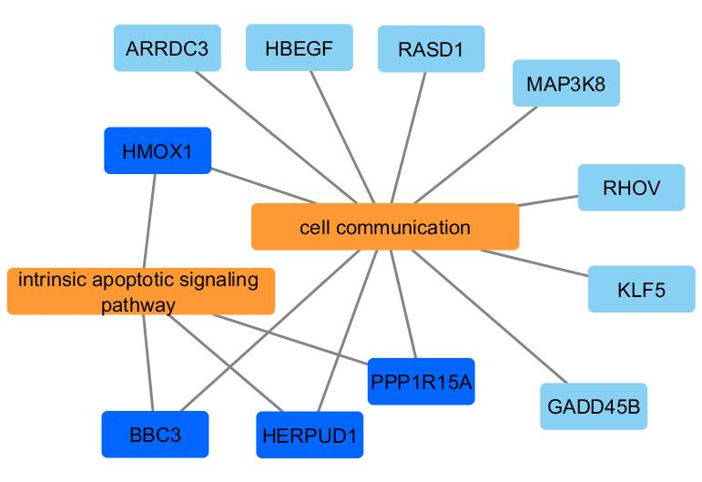
A network where significant GO terms and genes are presented as nodes while edges connect each gene to its associated term(s).
The enrichViewNet package offers the option to generate a network for only a portion of the significant terms by selecting the source or by providing a specific list of terms.Once the network is created, the user can personalize the visual attributes and integrate external information such as expression profiles, phenotypes and other molecular states. The user can also perform network analysis.
In addition, the enrichViewNet package also provides the option to create enrichment maps from functional enrichment results. The enrichment maps have been introduced in the Bioconductor enrichplot package (Yu 2022). Enrichment maps enable the visualization of enriched terms into a network with edges connecting overlapping genes. Thus, enriched terms with overlapping genes cluster together. This type of graphs facilitate the identification of functional modules.
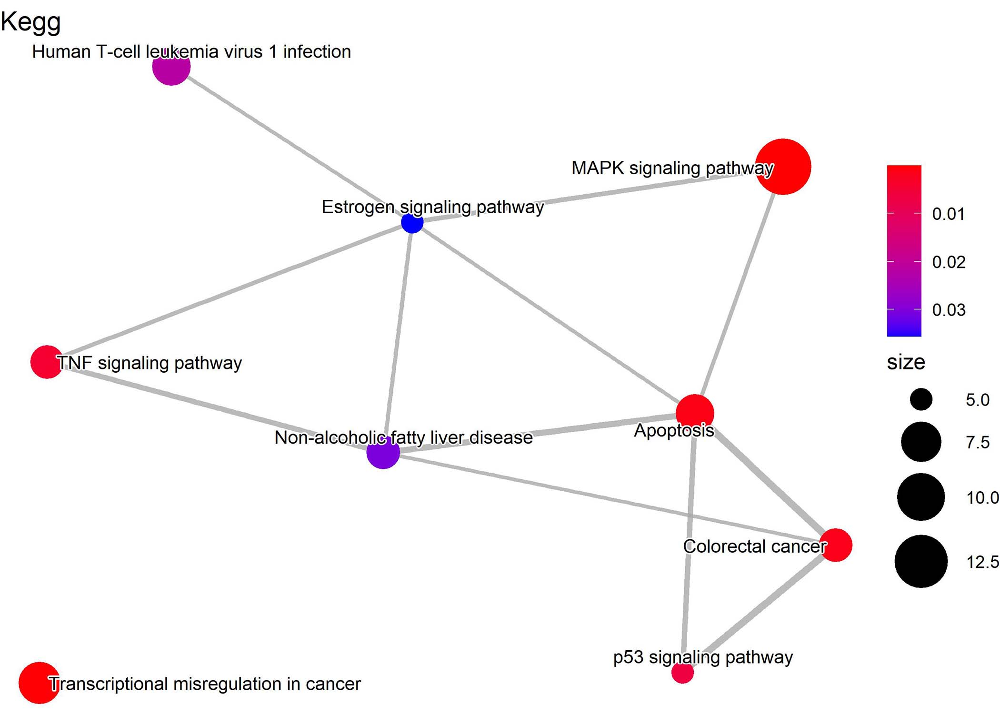
An enrichment map using significant Kegg terms where edges are connecting terms with overlapping genes.
enrichViewNet has been submitted to Bioconductor to aid researchers in carrying out reproducible network analyses using functional enrichment results.
Installation
To install this package from Bioconductor, start R (version 4.3 or later) and enter:
if (!requireNamespace("BiocManager", quietly = TRUE))
install.packages("BiocManager")
BiocManager::install("enrichViewNet")General workflow
The following workflow gives an overview of the capabilities of enrichViewNet:
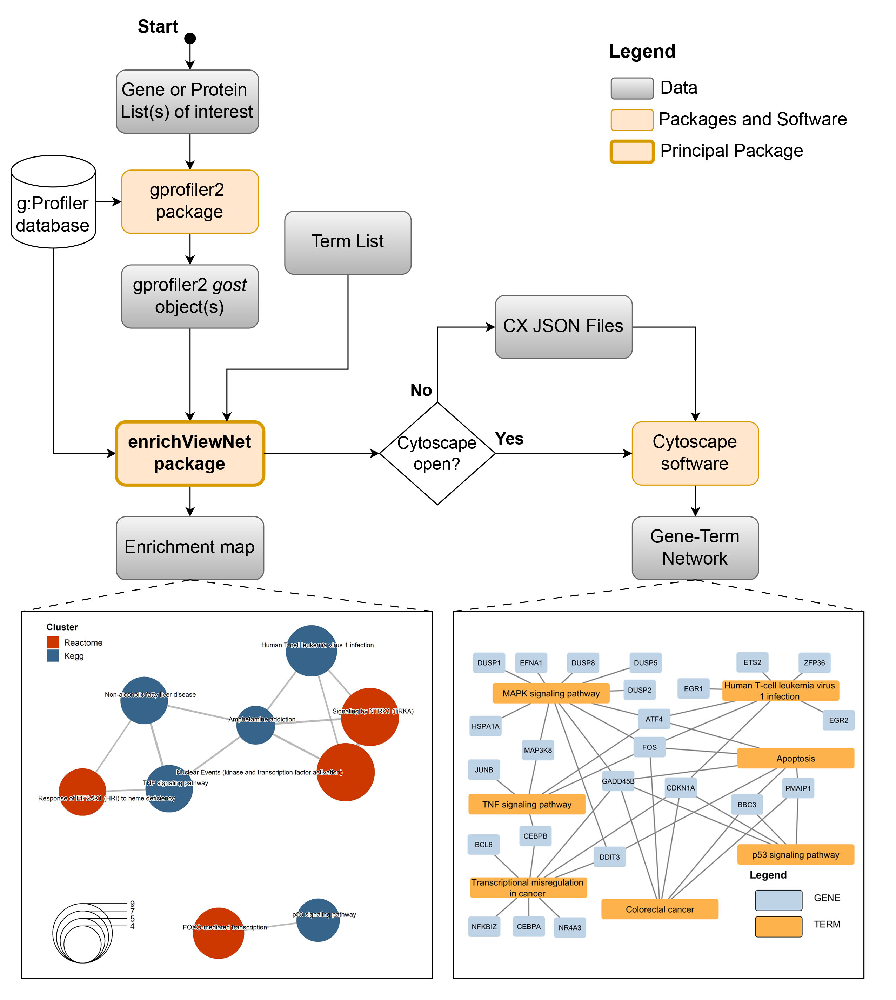
The enrichViewNet general workflow
The principal input of enrichViewNet is a functional enrichment result in a format identical to the one generated by the CRAN gprofiler2 package.
From an enrichment result, the enrichViewNet offers two options:
- generate a gene-term network that can be loaded in Cytoscape software
- generate a enrichment map
For the gene-term network, the installation of Cytoscape software is highly recommended.
Gene-Term network loadable in Cytoscape
The following workflow gives an overview of the steps associated to the creation of an gene-term network loadable in Cytoscape.
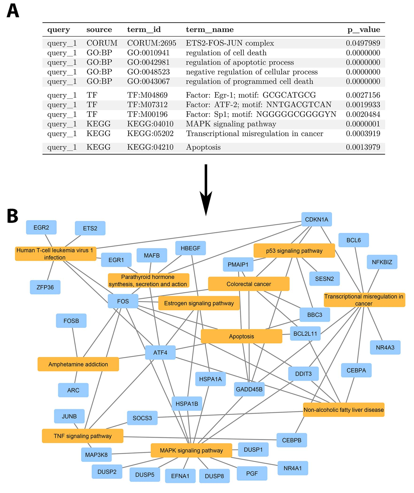
From an enrichment list (A) to a Cytoscape network (B).
The key steps for the workflow are:
| Step | Function |
|---|---|
| Run an enrichment analysis | gprofiler2::gost() |
| Start Cytoscape | outside R |
| Create a gene-term network | createNetwork() |
The package::function() notation is used for functions
from other packages.
Run an enrichment analysis
The first step consists in running an enrichment analysis with gprofiler2 package. The output of the gprofiler2::gost() is a list and should be saved.
## Required library
library(gprofiler2)
## The dataset of differentially expressed genes done between
## napabucasin treated and DMSO control parental (Froeling et al 2019)
## All genes tested are present
data("parentalNapaVsDMSODEG")
## Retain significant results
## (absolute fold change superior to 1 and adjusted p-value inferior to 0.05)
retained <- which(abs(parentalNapaVsDMSODEG$log2FoldChange) > 1 &
parentalNapaVsDMSODEG$padj < 0.05)
signRes <- parentalNapaVsDMSODEG[retained, ]
## Run one functional enrichment analysis using all significant genes
## The species is homo sapiens ("hsapiens")
## The g:SCS multiple testing correction method (Raudvere U et al 2019)
## The WikiPathways database is used
## Only the significant results are retained (significant=TRUE)
## The evidence codes are included in the results (evcodes=TRUE)
## A custom background included the tested genes is used
gostres <- gprofiler2::gost(
query=list(parental_napa_vs_DMSO=unique(signRes$EnsemblID)),
organism="hsapiens",
correction_method="g_SCS",
sources=c("WP"),
significant=TRUE,
evcodes=TRUE,
custom_bg=unique(parentalNapaVsDMSODEG$EnsemblID))The gost() function returns an named list of 2 entries:
- The result entry contains the enrichment results.
- The meta entry contains the metadata information.
## The 'gostres' object is a list of 2 entries
## The 'result' entry contains the enrichment results
## The 'meta' entry contains the metadata information
## Some columns of interest in the results
gostres$result[1:4, c("query", "p_value", "term_size",
"query_size", "intersection_size", "term_id")]## query p_value term_size query_size intersection_size
## 1 parental_napa_vs_DMSO 3.527365e-08 25 157 7
## 2 parental_napa_vs_DMSO 1.172428e-06 23 157 6
## 3 parental_napa_vs_DMSO 1.294450e-06 391 157 16
## 4 parental_napa_vs_DMSO 2.454227e-06 13 157 5
## term_id
## 1 WP:WP3613
## 2 WP:WP4925
## 3 WP:WP3888
## 4 WP:WP4211
## The term names can be longer than the one shown
gostres$result[19:22, c("term_id", "source", "term_name")]## term_id source term_name
## 19 WP:WP2877 WP Vitamin D receptor pathway
## 20 WP:WP5373 WP Osteoarthritic chondrocyte hypertrophy
## 21 WP:WP516 WP Exercise and hypertrophy in skeletal muscle
## 22 WP:WP1742 WP TP53 networkStart Cytoscape
Cytoscape is an open source software for visualizing networks. It enables network integration with any type of attribute data. The Cytoscape software is available at the Cytoscape website.
Cytoscape software logo.
The Cytoscape network generated by enrichViewNet will be automatically loaded into the Cytoscape software when the application is running.
If the application is not running, a CX JSON file will be created (standard Cytoscape file format). The file can then be loaded manually into the Cytoscape software.
Create a gene-term network
The gene-term network can be created with the createNetwork() function. If Cytoscape is opened, the network should automatically be loaded in the application. Otherwise, a CX JSON file is created. The CX JSON can be manually be opened in Cytoscape.
The following figure shows what the gene-term network looks like in Cytoscape. As there are numerous significant Reactome terms, the network is a bit hectic.
## Load saved enrichment results between parental Napa vs DMSO
data("parentalNapaVsDMSOEnrichment")
## Create network for REACTOME significant terms
## The 'removeRoot=TRUE' parameter removes the root term from the network
## The network will either by created in Cytoscape (if the application is open)
## or a CX file will be created in the temporary directory
createNetwork(gostObject=parentalNapaVsDMSOEnrichment, source="REAC",
removeRoot=TRUE, title="REACTOME_All",
collection="parental_napa_vs_DMSO",
fileName=file.path(tempdir(), "parentalNapaVsDMSOEnrichment.cx"))## [1] TRUEThis is an example of the Reactome network in Cytoscape.
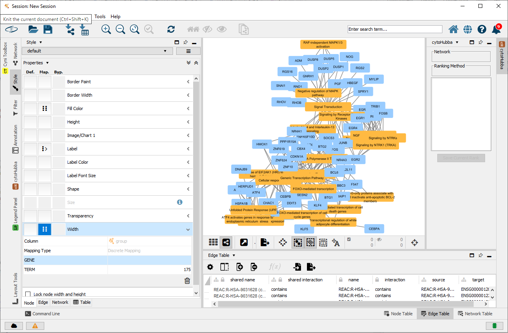
All reactome terms in a gene-term network loaded in Cytoscape.
To address this situation, an updated gene-term network containing only Reactome terms of interest is created.
## Load saved enrichment results between parental Napa vs DMSO
data("parentalNapaVsDMSOEnrichment")
## List of terms of interest
reactomeSelected <- c("REAC:R-HSA-9031628", "REAC:R-HSA-198725",
"REAC:R-HSA-9614085", "REAC:R-HSA-9617828",
"REAC:R-HSA-9614657", "REAC:R-HSA-73857",
"REAC:R-HSA-74160", "REAC:R-HSA-381340")
## All enrichment results
results <- parentalNapaVsDMSOEnrichment$result
## Retain selected results
selectedRes <- results[which(results$term_id %in% reactomeSelected), ]
## Print the first selected terms
selectedRes[, c("term_name")]## [1] "NGF-stimulated transcription"
## [2] "Nuclear Events (kinase and transcription factor activation)"
## [3] "FOXO-mediated transcription"
## [4] "FOXO-mediated transcription of cell death genes"
## [5] "RNA Polymerase II Transcription"
## [6] "Gene expression (Transcription)"
## [7] "Transcriptional regulation of white adipocyte differentiation"
## [8] "FOXO-mediated transcription of cell cycle genes"
## Create network for REACTOME selected terms
## The 'source="TERM_ID"' parameter enable to specify a personalized
## list of terms of interest
## The network will either by created in Cytoscape (if the application is open)
## or a CX file will be created in the temporary directory
createNetwork(gostObject=parentalNapaVsDMSOEnrichment, source="TERM_ID",
termIDs=selectedRes$term_id, title="REACTOME_Selected",
collection="parental_napa_vs_DMSO",
fileName=file.path(tempdir(), "parentalNapaVsDMSO_REACTOME.cx"))## [1] TRUEThe updated Reactome network in Cytoscape.
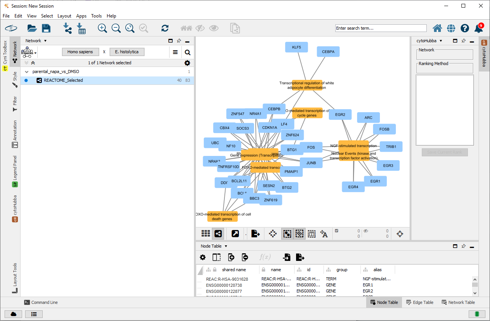
Selected Reactome terms in a gene-term network loaded in Cytoscape.
In Cytoscape, the appearance of a network is easily customized. As example, default color and shape for all nodes can be modified. For this example, the nodes have been moved to clarify their relation with the Reactome terms.
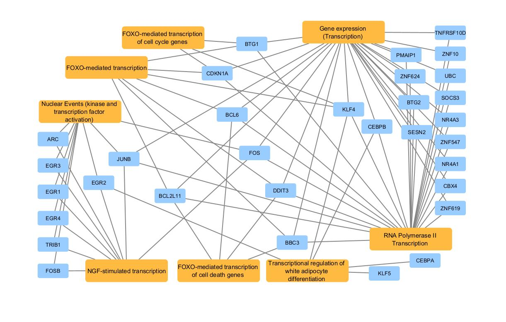
Final Reactome network after customization inside Cytoscape.
The final Reactome network, after customization inside Cytoscape, shows that multiple transcription enriched terms (FOXO-mediated transcription, FOXO-mediated transcription of cell cycle genes, transcription regulation of white adipocyte differentiation, RNA polymerase II transcription and NGF-stimulated transcription terms) are linked through enriched genes.
Enrichment map
The following workflow gives an overview of the steps associated to the creation of an enrichment map.
The key steps for the workflow are:
| Step | Function |
|---|---|
| Run an enrichment analysis | gprofiler2::gost() |
| Create an enrichment map |
createEnrichMap() or
createEnrichMapAsIgraph()
|
The package::function() notation is used for functions
from other packages.
It is possible to create an enrichment map in a ggplot
format with the createEnrichMap() function or in an
igraph format with the
createEnrichMapAsIgraph() function.
Run an enrichment analysis
The first step consists in running an enrichment analysis with gprofiler2 package. The output of the gprofiler2::gost() is a list and should be saved.
## Required library
library(gprofiler2)
## The dataset of differentially expressed genes done between
## napabucasin treated and DMSO control parental (Froeling et al 2019)
## All genes tested are present
data("parentalNapaVsDMSODEG")
## Retain significant results
## (absolute fold change superior to 1 and adjusted p-value inferior to 0.05)
retained <- which(abs(parentalNapaVsDMSODEG$log2FoldChange) > 1 &
parentalNapaVsDMSODEG$padj < 0.05)
signRes <- parentalNapaVsDMSODEG[retained, ]
## Run one functional enrichment analysis using all significant genes
## The species is homo sapiens ("hsapiens")
## The g:SCS multiple testing correction method (Raudvere U et al 2019)
## The WikiPathways database is used
## Only the significant results are retained (significant=TRUE)
## The evidence codes are included in the results (evcodes=TRUE)
## A custom background included the tested genes is used
gostres <- gprofiler2::gost(
query=list(parental_napa_vs_DMSO=unique(signRes$EnsemblID)),
organism="hsapiens",
correction_method="g_SCS",
sources=c("WP"),
significant=TRUE,
evcodes=TRUE,
custom_bg=unique(parentalNapaVsDMSODEG$EnsemblID))The gost() function returns an named list of 2 entries:
- The result entry contains the enrichment results.
- The meta entry contains the metadata information.
## The 'gostres' object is a list of 2 entries
## The 'result' entry contains the enrichment results
## The 'meta' entry contains the metadata information
## Some columns of interest in the results
gostres$result[1:4, c("query", "p_value", "term_size",
"query_size", "intersection_size", "term_id")]## query p_value term_size query_size intersection_size
## 1 parental_napa_vs_DMSO 3.527365e-08 25 157 7
## 2 parental_napa_vs_DMSO 1.172428e-06 23 157 6
## 3 parental_napa_vs_DMSO 1.294450e-06 391 157 16
## 4 parental_napa_vs_DMSO 2.454227e-06 13 157 5
## term_id
## 1 WP:WP3613
## 2 WP:WP4925
## 3 WP:WP3888
## 4 WP:WP4211
## The term names can be longer than the one shown
gostres$result[19:22, c("term_id", "source", "term_name")]## term_id source term_name
## 19 WP:WP2877 WP Vitamin D receptor pathway
## 20 WP:WP5373 WP Osteoarthritic chondrocyte hypertrophy
## 21 WP:WP516 WP Exercise and hypertrophy in skeletal muscle
## 22 WP:WP1742 WP TP53 networkCreate an enrichment map in a ggplot format
The enrichment map can be created with the createEnrichMap() function. The function generates a ggplot object.
In this enrichment map, terms with overlapping genes are linked together by edges. The Jaccard correlation coefficient is used as a metric of similarity. Terms with high similarity (similarity metric > 0.2) are linked together by edges. The edges are shorter and thicker when the similarity metric is high.
## Load saved enrichment results between parental Napa vs DMSO
data(parentalNapaVsDMSOEnrichment)
## Create network for all Kegg terms
## All terms will be shown even if there is overlapping
createEnrichMap(gostObject=parentalNapaVsDMSOEnrichment,
query="parental_napa_vs_DMSO", source="KEGG")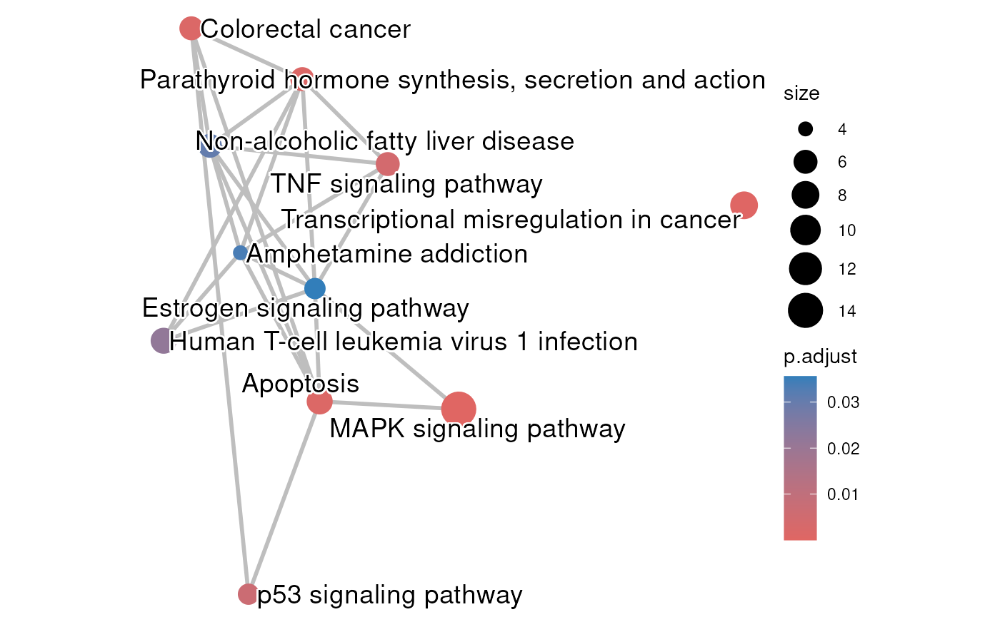
A Kegg enrichment map where terms with overlapping genes cluster together.
The Kegg enrichment map shows that the MAPK signaling pathway term is highly influential in the network. In addition, the Transcriptional misregulation in cancer term is the only isolated node.
Using list of term IDs
Instead of using a specific source, the enrichment map can be generated from a personalized array of term IDs. To do so, the source parameter must be set to “TERM_ID” and an array of term IDs must be passed to the termIDs parameter. The terms can be pick-up from different sources. If more than one terms have the same description, the term ID will be added at the end of the description for clarity.
## Load saved enrichment results between parental Napa vs DMSO
data(parentalNapaVsDMSOEnrichment)
## The term IDs must correspond to the IDs present in the "term_id" column
head(parentalNapaVsDMSOEnrichment$result[, c("query", "term_id", "term_name")],
n=3)## query term_id term_name
## 1 parental_napa_vs_DMSO GO:0048523 negative regulation of cellular process
## 2 parental_napa_vs_DMSO GO:0008219 cell death
## 3 parental_napa_vs_DMSO GO:0048519 negative regulation of biological process
## List of selected terms from different sources
termID <- c("KEGG:04115", "WP:WP4963", "KEGG:04010",
"REAC:R-HSA-5675221", "REAC:R-HSA-112409", "WP:WP382")
## Create network for all selected terms
createEnrichMap(gostObject=parentalNapaVsDMSOEnrichment,
query="parental_napa_vs_DMSO",
source="TERM_ID", termIDs=termID)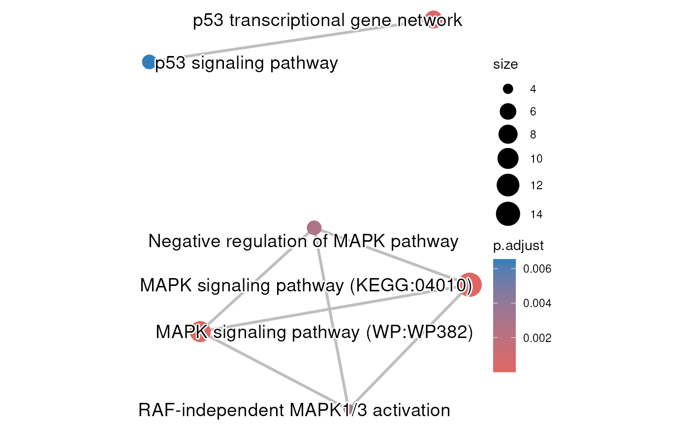
An enrichment map showing only the user selected terms.
As the description “MAPK signaling pathway” is present twice, the ID of each term has been added to the end of the description. Hence, the MAPK pathway from WikiPathway can be distinguished from the Kegg pathway.
Enrichment map customization
The output of the createEnrichMap() function is a ggplot object. This means that the graph can be personalized. For example, the default colors can be changed:
## The ggplot2 library is required
library(ggplot2)
## Create network for all Kegg terms
graphKegg <- createEnrichMap(gostObject=parentalNapaVsDMSOEnrichment,
query="parental_napa_vs_DMSO", source="KEGG")
## Nodes with lowest p-values will be in orange and highest p-values in black
## The title of the legend is also modified
graphKegg + scale_color_continuous(name="P-value adjusted", low="orange",
high="black")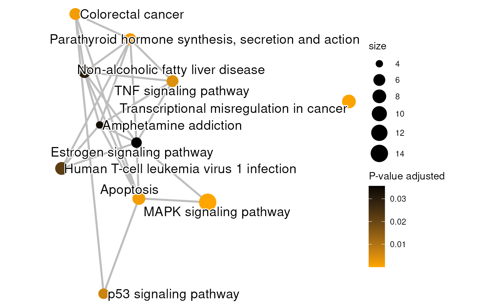
An enrichment map with personalized colors.
Create an enrichment map in an igraph format
The enrichment map can be created with the createEnrichMapAsIgraph() function. The function generates an igraph object.
The Jaccard correlation coefficient is used as a metric of similarity. A specific cut-off can be selected by user (default: 0.2). Terms with high similarity (similarity metric > value set by user) are linked together by edges.
## Load saved enrichment results between parental Napa vs DMSO
data(parentalNapaVsDMSOEnrichment)
## Create network for all Reactome terms
## All terms will be shown even if there is overlapping
## The similarity cut off is set to 0.3
## The top 10 terms with best p-values are shown
emapGraph <- createEnrichMapAsIgraph(gostObject=parentalNapaVsDMSOEnrichment,
query="parental_napa_vs_DMSO", similarityCutOff=0.3,
source="REAC", showCategory=12)
## Set seed to ensure reproducible results
set.seed(121)
## The igraph library is required
library(igraph)
## Use library igraph to create the visual representation
plot(emapGraph, layout=layout_with_fr, vertex.label.cex=0.5,
vertex.label.color="black", vertex.color="lightblue2") 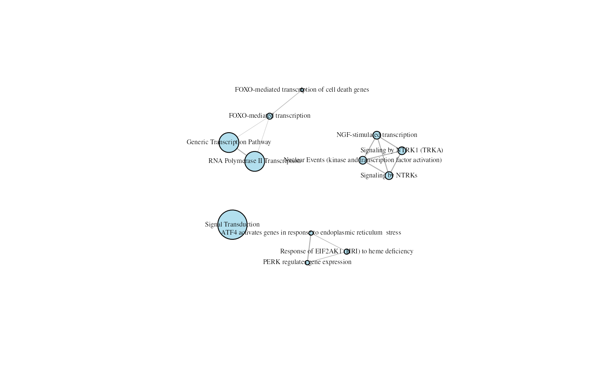
A Reactome (12 top terms) enrichment map where terms with overlapping genes cluster together.
Effect of seed value
The layering of the nodes is not always optimal. As the layering is affected by the seed value, you might want to test few seed values, using the set.seed() function, before selecting the final graph.
## Set seed to ensure reproducible results
set.seed(12)
## The igraph library is required
library(igraph)
## Use library igraph to create the visual representation
plot(emapGraph, layout=layout_with_fr, vertex.label.cex=0.5,
vertex.label.color="black", vertex.color="lightblue2") 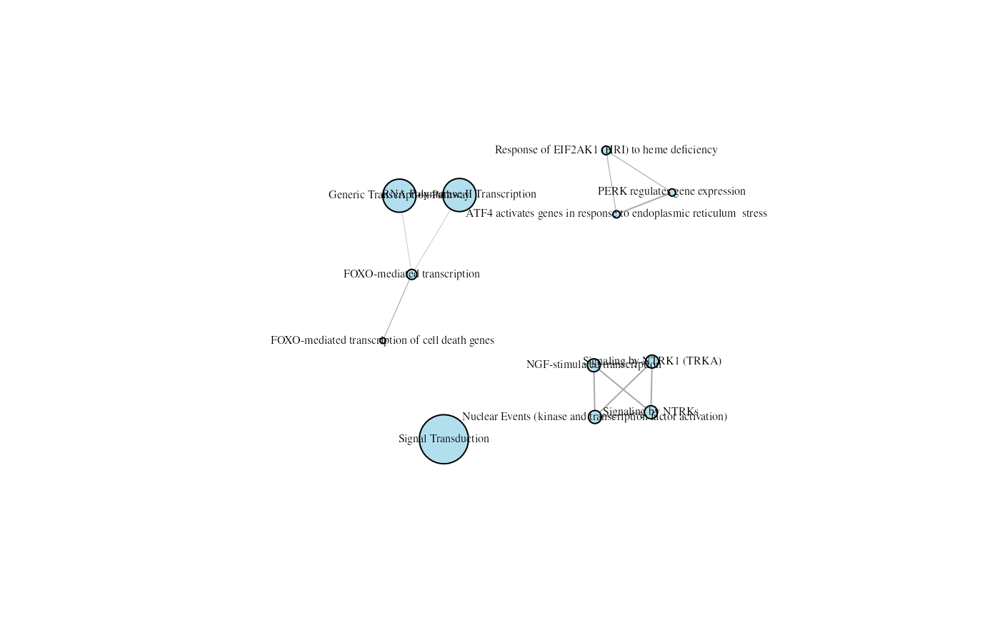
An enrichment map with a different seed.
Enrichment map customization
The output of the createEnrichMapAsIgraph() function is a igraph object. This means that the graph can be personalized. Attributes can also be added or modified inside the igraph object.
## The required libraries
library(igraph)
library(ggplot2)
library(ggtangle)
library(ggrepel)
## Create network for all Reactome terms
## Minimum similarity to have a edge is set to 0.4
## Only the top 15 terms with the bestp-values are shown
graphReac <- createEnrichMapAsIgraph(gostObject=parentalNapaVsDMSOEnrichment,
query="parental_napa_vs_DMSO", similarityCutOff=0.4,
source="REAC", showCategory=10)
## Set seed to ensure reproducible results
set.seed(92)
## Using ggplot2 to generate a ggplot graph
graphEmap <- ggplot(graphReac, layout=layout_with_fr)
## Move right the node related to Signal Transduction
graphEmap$data$x[graphEmap$data$label ==
"Signal Transduction"] <- 2.3
## Using ggtangle and ggrepel libraries to personalize output
## Set the color of the text, the nodes and the edges
## Set the node size using size value present in the igraph object
## The edge width is associated to the similarity value
## the coord_fixed() function is used to fix 1:1 ratio
graphEmap + geom_edge(aes(linewidth=weight), color="blue1") +
geom_point(aes(size=size), colour="gray40") +
geom_text_repel(aes(x=x, y=y, label=label), nudge_x=0.5,
nudge_y=0.2, col="darkviolet", min.segment.length=0.1,
max.overlaps=10) +
scale_size_continuous(range=c(4, 12)) +
scale_linewidth_binned(range=c(1, 3)) + coord_fixed() 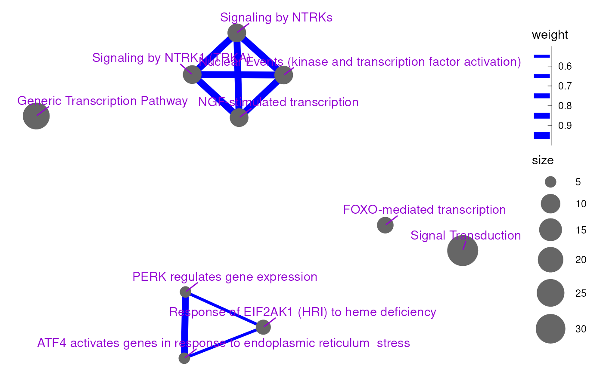
An enrichment map with personalized visualization options.
Enrichment map with groups from different enrichment analyses
The following workflow gives an overview of the steps associated to the creation of an enrichment map with groups. Groups can be created from the same enrichment analysis or can come from different enrichment analyses. This section is specifically for enrichment maps created using multiple enrichment analyses.
The key steps for the workflow are:
| Step | Function |
|---|---|
| Run multiple enrichment analyses | gprofiler2::gost() |
| Create an enrichment map with groups |
createEnrichMapMultiBasic() or
createEnrichMapMultiBasicAsIgraph()
|
The package::function() notation is used for functions
from other packages.
It is possible to create an enrichment map in a ggplot
format with the createEnrichMapMultiComplex() function or
in an igraph format with the
createEnrichMapMultiComplexAsIgraph() function.
The first step has been presented in the previous section.
Create an enrichment map using multiple enrichment analyses in a
ggplot format
An enrichment map can show enrichment results from multiple
enrichment analyses with the createEnrichMapMultiBasic
function. A different color is used for each analysis. This enables to
highlight the similarities and differences between the analyses.
## Set seed to ensure reproducible results
set.seed(2121)
## The dataset of functional enriched terms for two experiments:
## napabucasin treated and DMSO control parental and
## napabucasin treated and DMSO control expressing Rosa26 control vector
## (Froeling et al 2019)
data("parentalNapaVsDMSOEnrichment")
data("rosaNapaVsDMSOEnrichment")
## The gostObjectList is a list containing all
## the functional enrichment objects
gostObjectList <- list(parentalNapaVsDMSOEnrichment,
rosaNapaVsDMSOEnrichment)
## The queryList is a list of query names retained for each of the enrichment
## object (same order). Beware that a enrichment object can contain more than
## one query.
query_01 <- unique(parentalNapaVsDMSOEnrichment$result$query)[1]
query_02 <- unique(rosaNapaVsDMSOEnrichment$result$query)[1]
queryList <- list(query_01, query_02)
## Enrichment map where the groups are the KEGG results for the 2 different
## experiments
createEnrichMapMultiBasic(gostObjectList=gostObjectList,
queryList=queryList, source="KEGG", removeRoot=TRUE)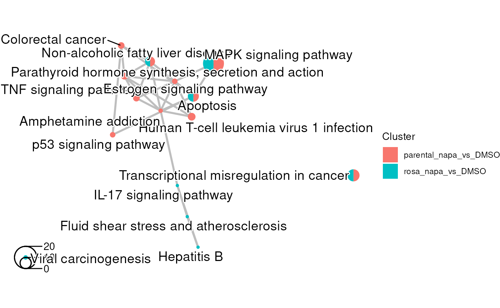
An enrichment map containing Kegg enrichment results for 2 different experiments.
There are 4 KEGG enrichment terms that are shared by the 2 experiments. In additions, the Viral carinogenesis term is the only term that is not related to the other KEGG terms.
Enrichment map customization
The output of the createEnrichMapMultiBasic() function is a ggplot object. This means that the graph can be personalized. For example, the default colors, legend title and legend font can be changed:
## Required library
library(ggplot2)
## Enrichment map where the groups are the KEGG results for the 2 different
## experiments
createEnrichMapMultiBasic(gostObjectList=gostObjectList,
queryList=queryList, source="KEGG", removeRoot=TRUE) +
scale_fill_manual(name="Groups",
breaks=queryList,
values=c("cyan4", "bisque3"),
labels=c("parental", "rosa")) +
theme(legend.title=element_text(face="bold"))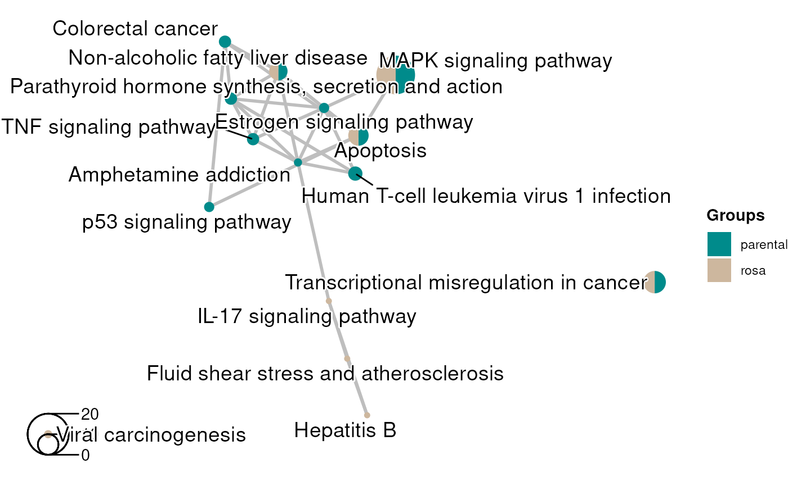
An enrichment map using KEGG terms from two enrichment analyses with personalized colors and legend.
Create an enrichment map using multiple enrichment analyses in an
igraph format
The createEnrichMapMultiBasicAsIgraph() function enables enrichment map to be generate in an igraph format.
## Set seed to ensure reproducible results
set.seed(2121)
## The dataset of functional enriched terms for two experiments:
## napabucasin treated and DMSO control parental and
## napabucasin treated and DMSO control expressing Rosa26 control vector
## (Froeling et al 2019)
data("parentalNapaVsDMSOEnrichment")
data("rosaNapaVsDMSOEnrichment")
## The gostObjectList is a list containing all
## the functional enrichment objects
gostObjectList <- list(parentalNapaVsDMSOEnrichment,
rosaNapaVsDMSOEnrichment)
## The queryList is a list of query names retained for each of the enrichment
## object (same order). Beware that a enrichment object can contain more than
## one query.
query_01 <- unique(parentalNapaVsDMSOEnrichment$result$query)[1]
query_02 <- unique(rosaNapaVsDMSOEnrichment$result$query)[1]
queryList <- list(query_01, query_02)
## Enrichment map where the groups are the GO Molecular Function results
## for the 2 different experiments
## Only the top 10 terms for each experiments (based on p-value) are shown
## Minimum Jaccard coefficient between 2 nodes is set to 0.6
emapGraph <- createEnrichMapMultiBasicAsIgraph(gostObjectList=gostObjectList,
queryList=queryList, source="GO:MF", removeRoot=TRUE, showCategory=5,
similarityCutOff=0.6)
library(igraph)
plot(emapGraph)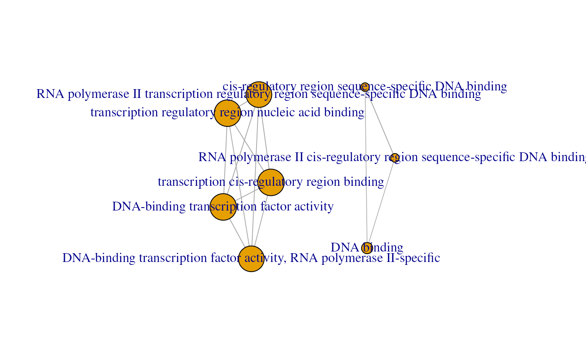
An enrichment map containing GO Molecular Function enrichment results (top 10) for 2 different experiments.
Enrichment map customization
The graph representation of an igraph object can be personalized. Attributes can also be added or modified inside the igraph object. This is an important step to enable a scatter pie representation of the map.
## The required libraries
library(igraph)
library(ggplot2)
library(ggtangle)
library(ggrepel)
library(scatterpie)
set.seed(11)
graphEmap <- ggplot(emapGraph, layout=layout_with_fr)
## Extract information from igraph object about group associated to each node
pieInfo <- as.data.frame(do.call(rbind, V(emapGraph)$pie))
colnames(pieInfo) <- V(emapGraph)$pieName[[1]]
## Add information into the ggplot object to be able to color nodes
for (i in seq_len(ncol(pieInfo))) {
graphEmap$data[colnames(pieInfo)[i]] <- pieInfo[, i]
}
## Colors selected for the groups
groupColor <- c("darkorange", "darkviolet")
## Using ggtangle, scatterpie and ggrepel libraries to personalize output
## geom_scatterpie() allows to have scatter pie plot
## geom_text_repel() allows to have minimum overlying terms
## scale_fill_manual() allows to personalize the color of the nodes
## coord_fixed() forces the plot to have a 1:1 aspect ratio
graphEmap + geom_edge(aes(linewidth=weight), color="black") +
geom_scatterpie(aes(x=x, y=y, r=size/100),
cols=c(colnames(pieInfo)), legend_name="Group", color=NA) +
geom_scatterpie_legend(radius=graphEmap$data$size/100, n=4,
x=max(graphEmap$data$x)+1, y=min(graphEmap$data$y)-0.5,
labeller=function(x) {round(x*100)}, label_position="right") +
scale_fill_manual(values=groupColor) +
scale_size_continuous(range=c(2, 8)) +
scale_linewidth_binned(range=c(1, 3)) +
geom_text_repel(aes(x=x, y=y, label=label), color="blue2",
max.overlaps=10) +
coord_fixed()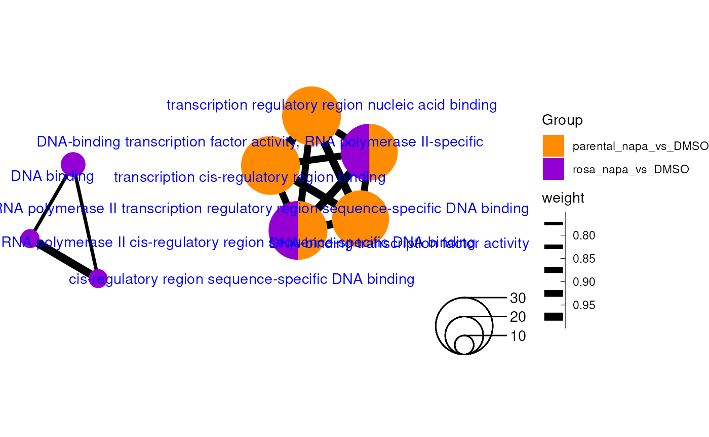
An enrichment map using GO Molecular Function terms from two enrichment analyses with personalized colors and legend.
Enrichment map with groups from same enrichment analysis or from complex designs
The following workflow gives an overview of the steps associated to the creation of an enrichment map with groups. Groups can be created from the same enrichment analysis or can come from different enrichment analyses. This section is specifically for enrichment maps created using complex designs.
The key steps for the workflow are:
| Step | Function |
|---|---|
| Run one ro multiple enrichment analyses | gprofiler2::gost() |
| Create an enrichment map with group |
createEnrichMapMultiComplex() or
createEnrichMapMultiComplexAsIgraph()
|
The package::function() notation is used for functions
from other packages.
It is possible to create an enrichment map in a ggplot
format with the createEnrichMapMultiComplex() function or
in an igraph format with the
createEnrichMapMultiComplexAsIgraph() function.
The first step has been presented in the previous section.
Create an enrichment map using mutliple subsections of one
enrichment analysis in a ggplot format
The createEnrichMapMultiComplex() function enables enrichment map to be generate with multiple groups from one enrichment analysis. As an example, terms from different sources can be drawn in different colors.
## Set seed to ensure reproducible results
set.seed(3221)
## The dataset of functional enriched terms for one experiment:
## napabucasin treated and DMSO control expressing Rosa26 control vector
## (Froeling et al 2019)
data("rosaNapaVsDMSOEnrichment")
## The gostObjectList is a list containing all
## the functional enrichment objects
## In this case, the same enrichment object is used twice
gostObjectList <- list(rosaNapaVsDMSOEnrichment,
rosaNapaVsDMSOEnrichment)
## Extract the query name from the enrichment object
query_01 <- unique(rosaNapaVsDMSOEnrichment$result$query)[1]
## The query information is a data frame containing the information required
## to extract the specific terms for each enrichment object.
## The number of rows must correspond to the number of enrichment objects/
## The query name must be present in the enrichment object.
## The source can be: "GO:BP" for Gene Ontology Biological Process,
## "GO:CC" for Gene Ontology Cellular Component, "GO:MF" for Gene Ontology
## Molecular Function, "KEGG" for Kegg, "REAC" for Reactome,
## "TF" for TRANSFAC, "MIRNA" for miRTarBase, "CORUM" for CORUM database,
## "HP" for Human phenotype ontology and "WP" for WikiPathways or
## "TERM_ID" when a list of terms is specified.
## The termsIDs is an empty string except when the source is set to "TERM_ID".
## The group names are going to be used in the legend and should be unique to
## each group.
queryInfo <- data.frame(queryName=c(query_01, query_01),
source=c("KEGG", "REAC"),
removeRoot=c(TRUE, TRUE),
termIDs=c("", ""),
groupName=c("Kegg", "Reactome"),
stringsAsFactors=FALSE)
## Enrichment map where the groups are the KEGG and Reactome results for the
## same experiment
createEnrichMapMultiComplex(gostObjectList=gostObjectList,
queryInfo=queryInfo)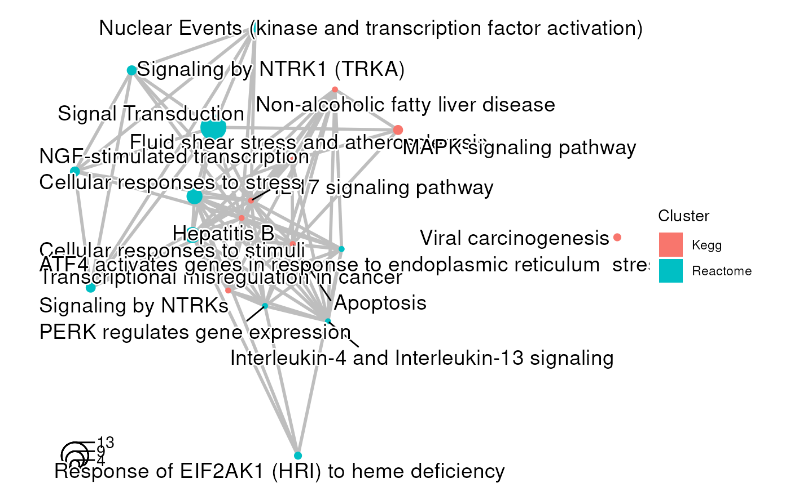
An enrichment map containing Kegg and Reactome results from the rosa Napa vs DMSO analysis.
The significant genes are overlapping between the Kegg and Reactome pathways as shown by the connections between the pathways. The only isolated term is the Kegg Viral carcinogenesis pathway.
Create an enrichment map using a complex design
Complex designs can be used with createEnrichMapMultiComplex(). Results from different analyses as well as split results from the same analysis can be showcase together.
In this example, the enrichment map will contain 4 groups from 2 experiments: - MAP kinases related terms in rosa napabucasin treated vs DMSO control - MAP kinases related terms in parental napabucasin treated vs DMSO control - Interleukin related terms in rosa napabucasin treated vs DMSO control - Interleukin related terms in parental napabucasin treated vs DMSO control
## Set seed to ensure reproducible results
set.seed(28)
## The datasets of functional enriched terms for the two experiments:
## napabucasin treated and DMSO control expressing Rosa26 control vector and
## napabucasin treated and DMSO control parental MiaPaCa2 cells
## (Froeling et al 2019)
data("rosaNapaVsDMSOEnrichment")
data("parentalNapaVsDMSOEnrichment")
## The gostObjectList is a list containing all
## the functional enrichment objects
## In this case, the same enrichment object is used twice
## The order of the objects must respect the order on the queryInfo data frame
## In this case:
## 1. rosa dataset (for MAP kinases)
## 2. parental dataset (for MAP kinases)
## 3. rosa dataset (for interleukin)
## 4. parental dataset (for interleukin)
gostObjectList <- list(rosaNapaVsDMSOEnrichment, parentalNapaVsDMSOEnrichment,
rosaNapaVsDMSOEnrichment, parentalNapaVsDMSOEnrichment)
## Extract the query name from the enrichment object
query_rosa <- unique(rosaNapaVsDMSOEnrichment$result$query)[1]
query_parental <- unique(parentalNapaVsDMSOEnrichment$result$query)[1]
## List of selected terms that will be shown in each group
rosa_mapk <- "GO:0017017,GO:0033549,KEGG:04010,WP:WP382"
rosa_il <- "KEGG:04657,WP:WP4754"
parental_mapk <- paste0("GO:0017017,GO:0033549,KEGG:04010,",
"REAC:R-HSA-5675221,REAC:R-HSA-112409,WP:WP382")
parental_il <- "WP:WP4754,WP:WP395"
## The query information is a data frame containing the information required
## to extract the specific terms for each enrichment object
## The number of rows must correspond to the number of enrichment objects
## The query name must be present in the enrichment object
## The source is set to "TERM_ID" so that the terms present in termIDs column
## will be used
## The group name will be used for the legend, the same name cannot be
## used twice
queryInfo <- data.frame(queryName=c(query_rosa, query_parental,
query_rosa, query_parental),
source=c("TERM_ID", "TERM_ID", "TERM_ID", "TERM_ID"),
removeRoot=c(FALSE, FALSE, FALSE, FALSE),
termIDs=c(rosa_mapk, parental_mapk, rosa_il, parental_il),
groupName=c("rosa - MAP kinases", "parental - MAP kinases",
"rosa - Interleukin", "parental - Interleukin"),
stringsAsFactors=FALSE)
## Enrichment map where the groups TODO
createEnrichMapMultiComplex(gostObjectList=gostObjectList,
queryInfo=queryInfo)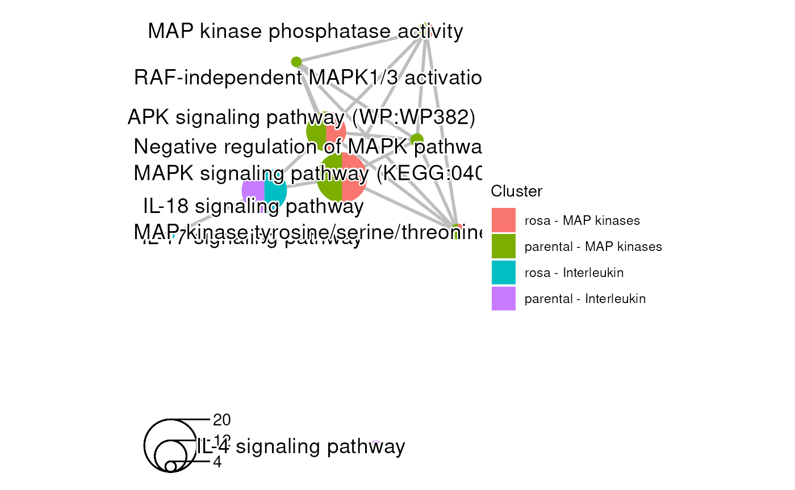
An enrichment map using selected terms related to MAP kinases and interleukin in two different experiments.
While the two experiments have a lot of similar enriched terms, there are still terms that are unique to each experiment.
Create an enrichment map using mutliple subsections of one
enrichment analysis in a igraph format
The createMultiEmapAsIgraph() function enables enrichment
map to be generate with multiple groups from one enrichment analysis in
a igraph format. As an example, terms from different
sources can be drawn in different colors.
## The dataset of functional enriched terms for one experiment:
## napabucasin treated and DMSO control expressing Rosa26 control vector
## (Froeling et al 2019)
data("rosaNapaVsDMSOEnrichment")
## The gostObjectList is a list containing all
## the functional enrichment objects
## In this case, the same enrichment object is used twice
gostObjectList <- list(rosaNapaVsDMSOEnrichment,
rosaNapaVsDMSOEnrichment)
## Extract the query name from the enrichment object
query_01 <- unique(rosaNapaVsDMSOEnrichment$result$query)[1]
## The query information is a data frame containing the information required
## to extract the specific terms for each enrichment object.
## The number of rows must correspond to the number of enrichment objects/
## The query name must be present in the enrichment object.
## The source can be: "GO:BP" for Gene Ontology Biological Process,
## "GO:CC" for Gene Ontology Cellular Component, "GO:MF" for Gene Ontology
## Molecular Function, "KEGG" for Kegg, "REAC" for Reactome,
## "TF" for TRANSFAC, "MIRNA" for miRTarBase, "CORUM" for CORUM database,
## "HP" for Human phenotype ontology and "WP" for WikiPathways or
## "TERM_ID" when a list of terms is specified.
## The termsIDs is an empty string except when the source is set to "TERM_ID".
## The group names are going to be used in the legend and should be unique to
## each group.
queryInfo <- data.frame(queryName=c(query_01, query_01),
source=c("KEGG", "REAC"),
removeRoot=c(TRUE, TRUE),
termIDs=c("", ""),
groupName=c("Kegg", "Reactome"),
stringsAsFactors=FALSE)
## Enrichment map where the groups are the KEGG and Reactome results for the
## same experiment
## Minimum similarity coefficient to have 2 terms linked is set to 0.5
emapGraph <- createEnrichMapMultiComplexAsIgraph(gostObjectList=gostObjectList,
queryInfo=queryInfo, similarityCutOff=0.5)
## The igraph library is required
library(igraph)
## Set seed to ensure reproducible results
set.seed(3221)
## Use library igraph to create the visual representation
plot(emapGraph, layout=layout_with_fr, vertex.label.cex=0.5,
vertex.label.color="black") 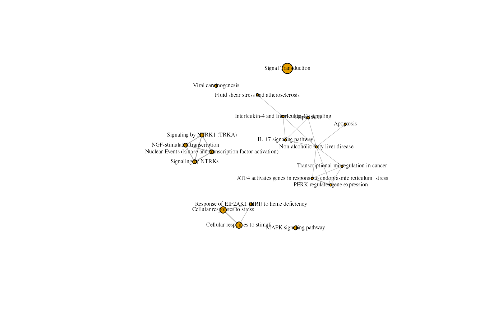
An enrichment map containing Kegg and Reactome results from the rosa Napa vs DMSO analysis.
In this situation, the default output from the igraph
library doesn’t create a scatter pie graph. Enrichment map customization
is required to generate a scatter pie graph. This is covered in the next
topic.
Effect of seed value
The layering of the nodes is not always optimal. As the layering is
affected by the seed value, you might want to test few seed
values, using the set.seed() function, before selecting the
final graph.
## The igraph library is required
library(igraph)
## Set seed to ensure reproducible results
set.seed(911)
## Use library igraph to create the visual representation
plot(emapGraph, layout=layout_with_fr, vertex.label.cex=0.5,
vertex.label.color="black") 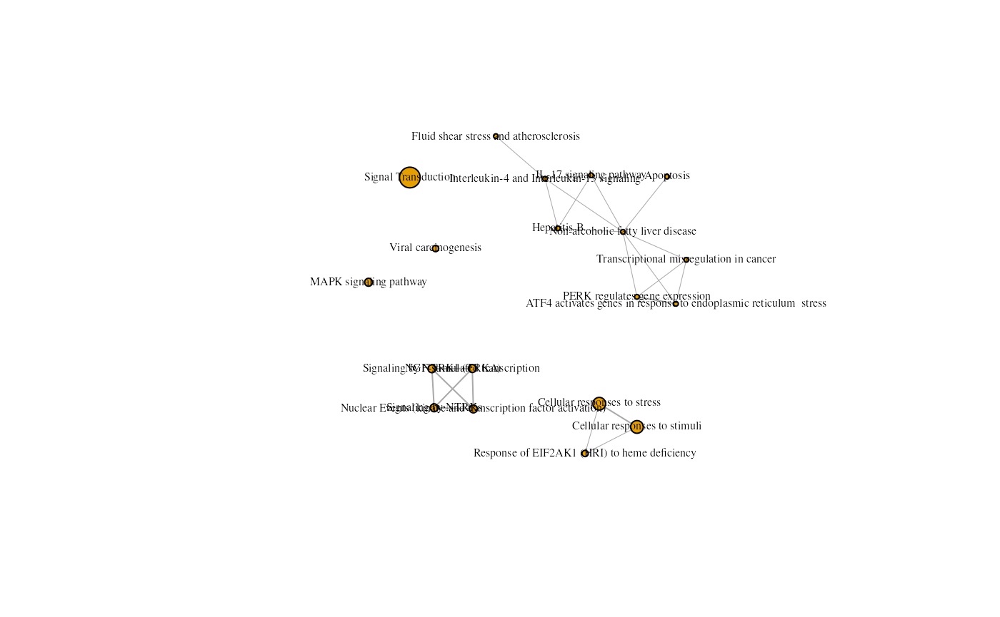
An enrichment map containing Kegg and Reactome results from the rosa Napa vs DMSO analysis with a different seed.
Enrichment map customization
The igraph object can be used to generate personalized
graphs. Attributes can also be added or modified inside the igraph
object.
## Visualization libraries is required
library(igraph)
library(ggplot2)
library(ggtangle)
library(ggrepel)
library(scatterpie)
## Set seed to ensure reproducible results
set.seed(21)
## Using ggplot2 to generate a ggplot graph
graphEmap <- ggplot(emapGraph, layout=layout_with_fr)
## Extract information about group associated to each node
pieInfo <- as.data.frame(do.call(rbind, V(emapGraph)$pie))
colnames(pieInfo) <- V(emapGraph)$pieName[[1]]
## Add information into the ggplot object to be able to color nodes
for (i in seq_len(ncol(pieInfo))) {
graphEmap$data[colnames(pieInfo)[i]] <- pieInfo[, i]
}
## Colors selected for the groups
groupColor <- c("blue", "darkviolet")
## Using scatterpie, ggtangle and ggrepel libraries to personalize output
## geom_scatterpie() allows to have scatter pie plot
## geom_text_repel() allows to have minimum overlying terms
## scale_fill_manual() allows to personalize the color of the nodes
## coord_fixed() forces the plot to have a 1:1 aspect ratio
graphEmap + geom_edge(aes(linewidth=weight), color="lightblue3") +
geom_scatterpie(aes(x=x, y=y, r=size/50),
cols=c(colnames(pieInfo)), legend_name="Group", color=NA) +
geom_scatterpie_legend(radius=graphEmap$data$size/50, n=3,
x=max(graphEmap$data$x)+0.5, y=min(graphEmap$data$y)-0.5,
labeller=function(x) {round(x*50)}, label_position="right") +
scale_fill_manual(values=groupColor) +
scale_size_continuous(range=c(2, 8)) +
scale_linewidth_binned(range=c(1, 3)) +
geom_text_repel(aes(x=x, y=y, label=label), color="black",
max.overlaps=10) +
coord_fixed()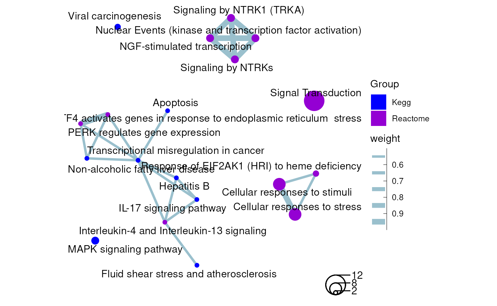
An enrichment map containing Kegg and Reactome results from the rosa Napa vs DMSO and parental vs DMSO analyses as a ggplot graph.
Create an enrichment map using mutliple subsections of multiple
enrichment analyses in a igraph format
The createEnrichMapMultiComplexAsIgraph() function enables
enrichment map to be generate with multiple groups from one enrichment
analysis in a igraph format.
## The dataset of functional enriched terms for two experiments:
## napabucasin treated and DMSO control expressing Rosa26 control vector
## (Froeling et al 2019)
data("rosaNapaVsDMSOEnrichment")
data("parentalNapaVsDMSOEnrichment")
## The gostObjectList is a list containing all
## the functional enrichment objects
## In this case, each enrichment object is used twice
gostObjectList <- list(rosaNapaVsDMSOEnrichment,
rosaNapaVsDMSOEnrichment, parentalNapaVsDMSOEnrichment,
parentalNapaVsDMSOEnrichment)
## Extract the query name from the enrichment object
query_01 <- unique(rosaNapaVsDMSOEnrichment$result$query)[1]
query_02 <- unique(parentalNapaVsDMSOEnrichment$result$query)[1]
## The query information is a data frame containing the information required
## to extract the specific terms for each enrichment object.
## The number of rows must correspond to the number of enrichment objects/
## The query name must be present in the enrichment object.
## The source can be: "GO:BP" for Gene Ontology Biological Process,
## "GO:CC" for Gene Ontology Cellular Component, "GO:MF" for Gene Ontology
## Molecular Function, "KEGG" for Kegg, "REAC" for Reactome,
## "TF" for TRANSFAC, "MIRNA" for miRTarBase, "CORUM" for CORUM database,
## "HP" for Human phenotype ontology and "WP" for WikiPathways or
## "TERM_ID" when a list of terms is specified.
## The termsIDs is an empty string except when the source is set to "TERM_ID".
## The group names are going to be used in the legend and should be unique to
## each group.
queryInfo <- data.frame(queryName=c(query_01, query_01, query_02, query_02),
source=c("GO:BP", "GO:CC", "GO:BP", "GO:CC"),
removeRoot=c(TRUE, TRUE, TRUE, TRUE),
termIDs=c("", "", "", ""),
groupName=c("GO:BP - Napa", "GO:CC - Napa",
"GO:BP - Parental", "GO:CC - Parental"),
stringsAsFactors=FALSE)
## Enrichment map where there are 2 groups generated from each
## experiment
## Minimum similarity coefficient to have 2 terms linked is set to 0.5
## The 10 terms with the best p-value are selected for each group
emapGraph <- createEnrichMapMultiComplexAsIgraph(gostObjectList=gostObjectList,
queryInfo=queryInfo, similarityCutOff=0.5, showCategory=10)
## The igraph library is required
library(igraph)
## Set seed to ensure reproducible results
set.seed(3221)
## Use library igraph to create the visual representation
## Unfortunately, the output does not generate a scatter pie plot
## See next topic to generate a scatter pie plot
plot(emapGraph, layout=layout_with_fr, vertex.label.cex=0.5,
vertex.label.color="black") 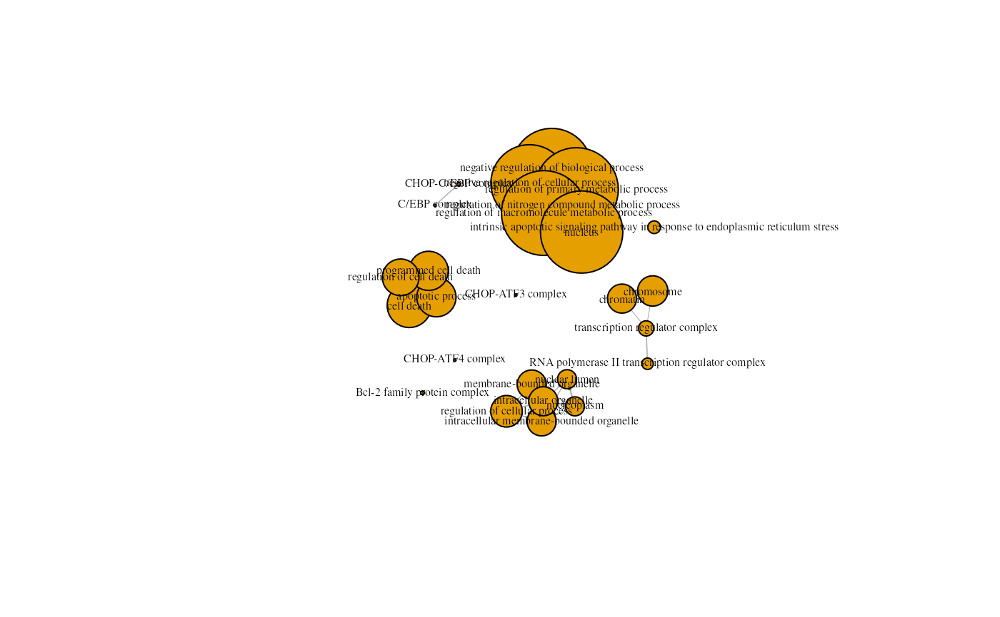
An enrichment map containing Kegg and Reactome results from the rosa Napa vs DMSO, and parenteal vs DMSO analyses.
In this situation, the default output from the igraph
library doesn’t create a scatter pie graph. Enrichment map customization
is required to generate a scatter pie graph. This is covered in the next
topic.
Enrichment map customization
The igraph object can be used to generate personalized
graphs. Attributes can also be added or modified inside the igraph
object.
## Visualization libraries is required
library(igraph)
library(ggplot2)
library(ggtangle)
library(ggrepel)
library(scatterpie)
## The dataset of functional enriched terms for two experiments:
## napabucasin treated and DMSO control expressing Rosa26 control vector
## (Froeling et al 2019)
data("rosaNapaVsDMSOEnrichment")
data("parentalNapaVsDMSOEnrichment")
## The gostObjectList is a list containing all
## the functional enrichment objects
## In this case, each enrichment object is used twice
gostObjectList <- list(rosaNapaVsDMSOEnrichment,
rosaNapaVsDMSOEnrichment, parentalNapaVsDMSOEnrichment,
parentalNapaVsDMSOEnrichment)
## Extract the query name from the enrichment object
query_01 <- unique(rosaNapaVsDMSOEnrichment$result$query)[1]
query_02 <- unique(parentalNapaVsDMSOEnrichment$result$query)[1]
## The query information is a data frame containing the information required
## to extract the specific terms for each enrichment object.
## The number of rows must correspond to the number of enrichment objects/
## The query name must be present in the enrichment object.
## The source can be: "GO:BP" for Gene Ontology Biological Process,
## "GO:CC" for Gene Ontology Cellular Component, "GO:MF" for Gene Ontology
## Molecular Function, "KEGG" for Kegg, "REAC" for Reactome,
## "TF" for TRANSFAC, "MIRNA" for miRTarBase, "CORUM" for CORUM database,
## "HP" for Human phenotype ontology and "WP" for WikiPathways or
## "TERM_ID" when a list of terms is specified.
## The termsIDs is an empty string except when the source is set to "TERM_ID".
## The group names are going to be used in the legend and should be unique to
## each group.
queryInfo <- data.frame(queryName=c(query_01, query_01, query_02, query_02),
source=c("KEGG", "REAC", "KEGG", "REAC"),
removeRoot=c(TRUE, TRUE, TRUE, TRUE),
termIDs=c("", "", "", ""),
groupName=c("Kegg - Rosa", "Reactome - Rosa",
"Kegg - Parental", "Reactome - Parental"),
stringsAsFactors=FALSE)
## Enrichment map where the groups are the KEGG and Reactome results for
## two enrichment analyses
## Minimum similarity coefficient to have 2 terms linked is set to 0.3
## Only the 7 terms with best p-value are going to be shown in each group
emapIgraph <- createEnrichMapMultiComplexAsIgraph(gostObjectList=gostObjectList,
queryInfo=queryInfo, showCategory=5, similarityCutOff=0.3)
## Set seed to ensure reproducible results
set.seed(21)
## Using ggplot2 to generate a ggplot graph
graphEmap <- ggplot(emapIgraph, layout=layout_with_fr)
## Extract information about group associated to each node
pieInfo <- as.data.frame(do.call(rbind, V(emapIgraph)$pie))
colnames(pieInfo) <- V(emapIgraph)$pieName[[1]]
## Add information into the ggplot object to be able to color nodes
for (i in seq_len(ncol(pieInfo))) {
graphEmap$data[colnames(pieInfo)[i]] <- pieInfo[, i]
}
## Colors selected for the groups
groupColor <- c("darkorange", "violet", "darkorange4", "darkviolet")
## Using scatterpie, ggtangle and ggrepel libraries to personalize output
## geom_scatterpie() allows to have scatter pie plot
## geom_text_repel() allows to have minimum overlying terms
## scale_fill_manual() allows to personalize the color of the nodes
## coord_fixed() forces the plot to have a 1:1 aspect ratio
graphEmap + geom_edge(aes(linewidth=weight), color="blue3") +
geom_scatterpie(aes(x=x, y=y, r=size/50),
cols=c(colnames(pieInfo)), legend_name="Group", color=NA) +
geom_scatterpie_legend(radius=graphEmap$data$size/50, n=3,
x=max(graphEmap$data$x)+0.5, y=min(graphEmap$data$y)-0.5,
labeller=function(x) {round(x*50)}, label_position="right") +
scale_fill_manual(values=groupColor) +
scale_size_continuous(range=c(2, 8)) +
scale_linewidth_binned(range=c(1, 2)) +
geom_text_repel(aes(x=x, y=y, label=label), color="black",
max.overlaps=10) +
coord_fixed()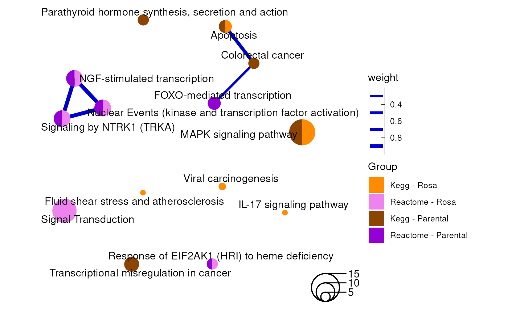
An enrichment map containing Kegg and Reactome results from the rosa Napa vs DMSO and parental vs DMSO analyses as a ggplot graph.
Code Ocean Capsule
A Code Ocean capsule showcasing the creation of an complex enrichment map from functional enrichment results is now publicly available:
https://doi.org/10.24433/CO.2493140.v1
Acknowledgments
The differentially expressed genes between napabucasin-treated cells (0.5 uM) and DMSO as vehicle control are reprinted from Clinical Cancer Research, 2019, 25 (23), 7162–7174, Fieke E.M. Froeling, Manojit Mosur Swamynathan, Astrid Deschênes, Iok In Christine Chio, Erin Brosnan, Melissa A. Yao, Priya Alagesan, Matthew Lucito, Juying Li, An-Yun Chang, Lloyd C. Trotman, Pascal Belleau, Youngkyu Park, Harry A. Rogoff, James D. Watson, David A. Tuveson, Bioactivation of napabucasin triggers reactive oxygen species–mediated cancer cell death, with permission from AACR.
Robert L. Faure is also supported by the National Sciences Engineering Research Council of Canada (NSERCC): 155751-1501.
Session info
Here is the output of sessionInfo() on the system on which this document was compiled:
## R Under development (unstable) (2026-04-20 r89923)
## Platform: x86_64-pc-linux-gnu
## Running under: Ubuntu 24.04.4 LTS
##
## Matrix products: default
## BLAS: /usr/lib/x86_64-linux-gnu/openblas-pthread/libblas.so.3
## LAPACK: /usr/lib/x86_64-linux-gnu/openblas-pthread/libopenblasp-r0.3.26.so; LAPACK version 3.12.0
##
## locale:
## [1] LC_CTYPE=en_US.UTF-8 LC_NUMERIC=C
## [3] LC_TIME=en_US.UTF-8 LC_COLLATE=en_US.UTF-8
## [5] LC_MONETARY=en_US.UTF-8 LC_MESSAGES=en_US.UTF-8
## [7] LC_PAPER=en_US.UTF-8 LC_NAME=C
## [9] LC_ADDRESS=C LC_TELEPHONE=C
## [11] LC_MEASUREMENT=en_US.UTF-8 LC_IDENTIFICATION=C
##
## time zone: UTC
## tzcode source: system (glibc)
##
## attached base packages:
## [1] stats graphics grDevices utils datasets methods base
##
## other attached packages:
## [1] scatterpie_0.2.6 ggrepel_0.9.8 ggtangle_0.1.1
## [4] igraph_2.3.0 ggplot2_4.0.2 gprofiler2_0.2.4
## [7] enrichViewNet_1.9.3 knitr_1.51 BiocStyle_2.39.0
##
## loaded via a namespace (and not attached):
## [1] RColorBrewer_1.1-3 jsonlite_2.0.0 tidydr_0.0.6
## [4] magrittr_2.0.5 farver_2.1.2 rmarkdown_2.31
## [7] fs_2.1.0 ragg_1.5.2 vctrs_0.7.3
## [10] memoise_2.0.1 RCurl_1.98-1.18 ggtree_4.1.2
## [13] base64enc_0.1-6 htmltools_0.5.9 curl_7.0.0
## [16] gridGraphics_0.5-1 strex_2.0.1 sass_0.4.10
## [19] KernSmooth_2.23-26 bslib_0.10.0 htmlwidgets_1.6.4
## [22] desc_1.4.3 plyr_1.8.9 plotly_4.12.0
## [25] cachem_1.1.0 uuid_1.2-2 lifecycle_1.0.5
## [28] pkgconfig_2.0.3 R6_2.6.1 fastmap_1.2.0
## [31] digest_0.6.39 aplot_0.2.9 enrichplot_1.31.5
## [34] ggnewscale_0.5.2 patchwork_1.3.2 AnnotationDbi_1.73.1
## [37] S4Vectors_0.49.2 textshaping_1.0.5 RSQLite_2.4.6
## [40] base64url_1.4 labeling_0.4.3 RJSONIO_2.0.0
## [43] httr_1.4.8 polyclip_1.10-7 compiler_4.7.0
## [46] bit64_4.8.0 fontquiver_0.2.1 withr_3.0.2
## [49] S7_0.2.1-1 backports_1.5.1 RCy3_2.31.1
## [52] DBI_1.3.0 ggforce_0.5.0 gplots_3.3.0
## [55] MASS_7.3-65 rappdirs_0.3.4 gtools_3.9.5
## [58] caTools_1.18.3 tools_4.7.0 otel_0.2.0
## [61] ape_5.8-1 glue_1.8.1 nlme_3.1-169
## [64] GOSemSim_2.37.2 grid_4.7.0 checkmate_2.3.4
## [67] pbdZMQ_0.3-14 cluster_2.1.8.2 reshape2_1.4.5
## [70] generics_0.1.4 gtable_0.3.6 tidyr_1.3.2
## [73] data.table_1.18.2.1 XVector_0.51.0 BiocGenerics_0.57.1
## [76] pillar_1.11.1 stringr_1.6.0 yulab.utils_0.2.4
## [79] IRdisplay_1.1 dplyr_1.2.1 tweenr_2.0.3
## [82] treeio_1.35.0 lattice_0.22-9 bit_4.6.0
## [85] tidyselect_1.2.1 fontLiberation_0.1.0 GO.db_3.23.1
## [88] Biostrings_2.79.5 fontBitstreamVera_0.1.1 bookdown_0.46
## [91] IRanges_2.45.0 Seqinfo_1.1.0 stats4_4.7.0
## [94] xfun_0.57 Biobase_2.71.0 stringi_1.8.7
## [97] lazyeval_0.2.3 ggfun_0.2.0 yaml_2.3.12
## [100] evaluate_1.0.5 gdtools_0.5.0 tibble_3.3.1
## [103] BiocManager_1.30.27 graph_1.89.1 ggplotify_0.1.3
## [106] cli_3.6.6 IRkernel_1.3.2 systemfonts_1.3.2
## [109] repr_1.1.7 jquerylib_0.1.4 Rcpp_1.1.1-1
## [112] png_0.1-9 XML_3.99-0.23 parallel_4.7.0
## [115] pkgdown_2.2.0 blob_1.3.0 DOSE_4.5.1
## [118] bitops_1.0-9 viridisLite_0.4.3 tidytree_0.4.7
## [121] ggiraph_0.9.6 enrichit_0.1.4 scales_1.4.0
## [124] purrr_1.2.2 crayon_1.5.3 rlang_1.2.0
## [127] KEGGREST_1.51.1